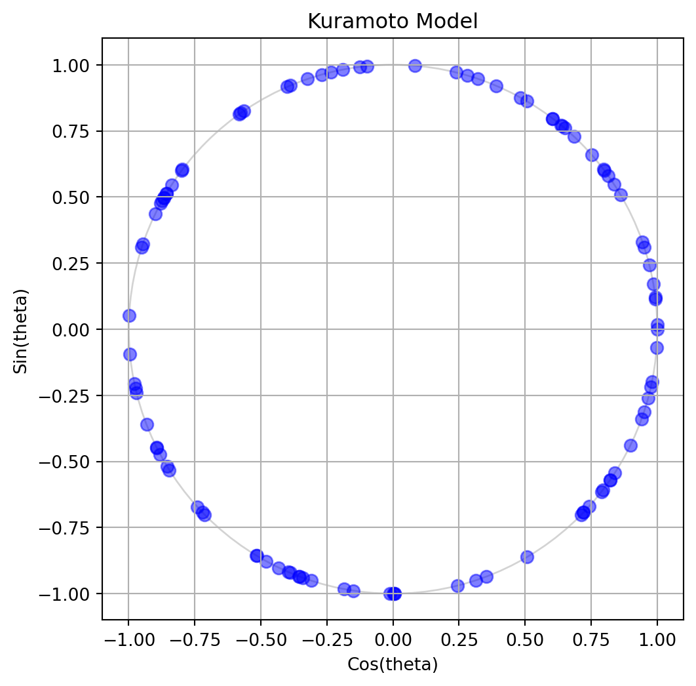

Kuramoto Lab: Initialization
Module 2: Synchronization and Collective Behaviour
In this lab you implement the Kuramoto model, animate it, and measure the transition to synchrony. You follow the course workflow: prediction, implementation, validation, experiment, interpretation and limitations. The theory is in The Kuramoto Model, The Order Parameter and Critical Coupling.
ImportantCore activity
The core of this lab is five pages: this one, The ODE, Animation, Bifurcation Diagram and Locating the Threshold. Pairwise vs Mean Field and Full Simulation are optional extensions. Finite-Size Effects closes the session. The graded Kuramoto Assignment is released today and builds on all of them.
Prediction
NoteExercise
Before writing code, answer these questions on paper. You will check them later.
- Take \(N = 100\) oscillators with normal frequencies, \(\sigma = 1\). What is \(K_c\)?
- What value of \(r\) do you expect at \(t = 0\) for uniform random phases? (The Order Parameter has an exercise on this.)
- For \(K = 10\) and for \(K = 0.1\), sketch what the phases on the circle will look like at \(t = 10\).
TipSolution
\(K_c = 2/(\pi g(0)) = \sqrt{8/\pi} \approx 1.60\). At \(t = 0\), \(r\) is of order \(1/\sqrt{N} = 0.1\). For \(K = 10 \gg K_c\) most phases gather in a tight cluster. For \(K = 0.1 \ll K_c\) they stay spread around the circle.
What you need
numpyfor random sampling and vectorized arithmetic.scipy.integrate.solve_ivp()to integrate the ODE.matplotlib.pyplotfor figures andmatplotlib.animationfor the animation.matplotlib.widgets.Sliderfor the optional interactive version.
Initialize Oscillators
The phases \(\theta_i\) are sampled uniformly on \([0, 2\pi)\) and the natural frequencies \(\omega_i\) from a normal distribution with standard deviation \(\sigma\) (Kuramoto 2003; Strogatz 2000).
NoteExercise
Write a function that initializes the oscillators. The outputs theta and omega are 1D arrays of length num_oscillators.
def initialize_oscillators(num_oscillators: int, sigma: float = 1.0, seed: int = None):
rng = np.random.default_rng(seed)
# Assign a random initial phase to each oscillator
theta = # TODO: draw from a uniform distribution on [0, 2 pi)
# Assign a random natural frequency to each oscillator
omega = # TODO: draw from a normal distribution with standard deviation sigma
return theta, omega
TipHint
A NumPy random generator rng = np.random.default_rng(seed) has methods for sampling:
- Uniform distribution:
rng.uniform(low=0.0, high=2 * np.pi, size=num_oscillators) - Normal distribution:
rng.normal(loc=0.0, scale=sigma, size=num_oscillators)
A fixed seed makes your runs reproducible.
TipSolution
Remember to import NumPy first.
import numpy as np
def initialize_oscillators(num_oscillators: int, sigma: float = 1.0, seed: int = None):
rng = np.random.default_rng(seed)
# Assign a random initial phase to each oscillator
theta = rng.uniform(low=0.0, high=2 * np.pi, size=num_oscillators)
# Assign a random natural frequency to each oscillator
omega = rng.normal(loc=0.0, scale=sigma, size=num_oscillators)
return theta, omegaPlot the Oscillators
To visualize the oscillators, plot their phases on the unit circle. The x-coordinate is \(\cos(\theta_i)\) and the y-coordinate is \(\sin(\theta_i)\). This way, each oscillator corresponds to a point on the circle. Figure 1 shows an example.
NoteExercise
Write code that draws your oscillators as blue dots on the unit circle. Your output should be similar to Figure 1, but feel free to use your own style.
theta, omega = initialize_oscillators(100, seed=1)
# TODO: compute the x and y coordinates of each oscillator
x =
y =
# TODO: create a figure, draw the unit circle and scatter the points
TipHint
Apply NumPy’s cos and sin functions to the whole theta array: x = np.cos(theta) and y = np.sin(theta). Then use plt.subplots() to create the axes and ax.scatter(x, y) to draw the points.
TipSolution
Set up the figure and axes with subplots, then plot the points with scatter.
import matplotlib.pyplot as plt
theta, omega = initialize_oscillators(100, seed=1)
x = np.cos(theta)
y = np.sin(theta)
# First, we prepare the figure and axes
fig, ax = plt.subplots(figsize=(6, 6))
# fig is the Figure, a "canvas" where everything is drawn
# ax is the Axes, a "subplot" where we can plot data
# A single figure can have multiple axes (e.g. for subplots)
ax.set_title("Kuramoto Model") # Title of the plot
ax.set_xlabel("Cos(theta)") # Name of x-axis
ax.set_ylabel("Sin(theta)") # Name of y-axis
ax.set_xlim(-1.1, 1.1) # Limits for x-axis
ax.set_ylim(-1.1, 1.1) # Limits for y-axis
ax.set_aspect("equal") # Make the circle look circular
ax.grid(True) # Show grid lines
# Draw unit circle (optional, but it helps to visualize the boundary)
circle = plt.Circle((0, 0), 1, color="lightgray", fill=False)
ax.add_artist(circle)
# Now we are ready to plot the oscillators as blue dots
ax.scatter(x, y, s=50, color="blue", alpha=0.5)
# s is the size of the dots
# alpha is the transparency (0 is fully transparent, 1 is fully opaque)
# we want the oscillators to be somewhat transparent so we can see overlaps
# Finally, we show the plot and close it to free up memory
plt.show()
plt.close()
NoteExercise
Compute the order parameter of your initial phases with np.abs(np.mean(np.exp(1j * theta))). Repeat for \(N = 100\), \(1000\) and \(10000\). Does it match your prediction?
for n in [100, 1000, 10000]:
theta, omega = initialize_oscillators(n, seed=1)
r = # TODO: compute the order parameter
print(n, r)
TipSolution
You should find values close to \(0.1\), \(0.03\) and \(0.01\), that is, of order \(1/\sqrt{N}\). The exact numbers change with the seed.
for n in [100, 1000, 10000]:
theta, omega = initialize_oscillators(n, seed=1)
r = np.abs(np.mean(np.exp(1j * theta)))
print(n, r, 1 / np.sqrt(n))References
Kuramoto, Yoshiki. 2003. Chemical Oscillations, Waves, and Turbulence. Dover Publications.
Strogatz, Steven H. 2000. “From Kuramoto to Crawford: Exploring the Onset of Synchronization in Populations of Coupled Oscillators.” Physica D: Nonlinear Phenomena 143: 1–20.